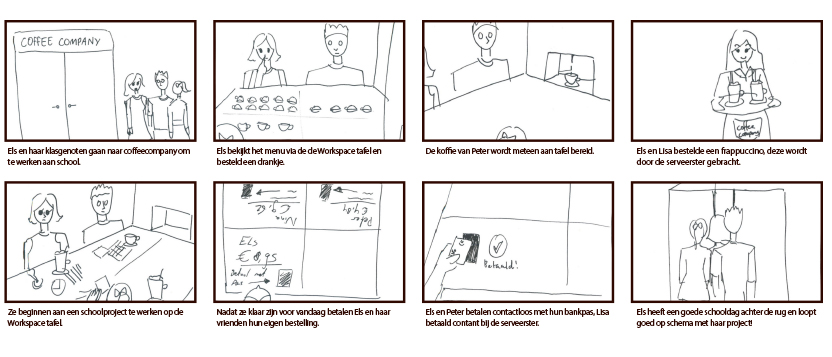

Assignment
This is a project during the course ‘New Product Development’. The assignment is to design a better
experience of drinking a coffee in the CoffeeCompany. Our design challenge was to design an
experience that also involved students working on a project. So basically, design a experience in
the coffee company for students that are working on a project that makes them want to drink their
coffee in the CoffeeCompany.
Description
In our research we found out that that the workspace was very small for multiple people to work in.
Also ordering new drinks and paying individually for their own drinks where opportunities for
improvement. So we came up with ‘Workspace’. Workspace is a space/surrounding designed for students
that need to work in groups, in this space is a big interactive table that lets you work with your
laptop local files, order drinks and pay your bill individually.
Highlights
The four phases
This project is divided into four phases; Orientation, Defining, Idea generation and Conceptualise.
In each phase we learned about research methods we could apply to come closer to the perfect
solution. For example, in the orientation phase we made a experience map based on our own experience
of visiting the CoffeeCompany and work on a project while drinking a coffee. By creating this
experience map we took a very close look at what gave us positive and negative feelings during the
experience. This way we could see where the opportunities lay for improvements. After all the
research and idea generation we came up with the following concept described in the storyboard
below. And this idea is what became ‘Workspace’
